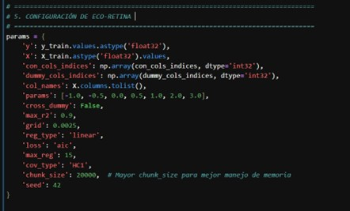

Sebastián Sifontes
Economista · Explorador de datos · Aprendiz eterno
“La realidad es aquello que, cuando dejas de creer en ello, no desaparece.”
🌱 Eco-RETINA
Un modelo interpretable y sostenible para predecir precios de viviendas públicas en Singapur. Basado en Green AI y econometría moderna.
🔎 Ver publicación

🧭 Mis ejes de interés
Econometría
Modelos estadísticos para entender relaciones económicas complejas.
Green AI
Inteligencia Artificial con bajo consumo y propósito sostenible.
Urban Analytics
Analizo dinámicas urbanas para orientar políticas públicas efectivas.